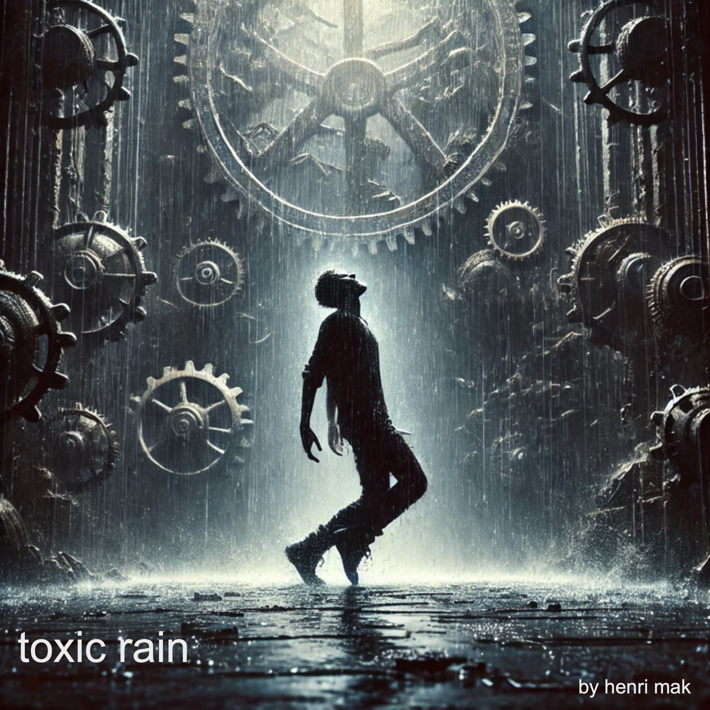

toxic rain
Toxic Rain taucht ein in ein fieberhaftes Karussell aus Wahnsinn und Verfall.
Der Song schickt Gedanken ins Leere, während rostige Zahnräder in goldenen Käfigen kreisen.
Regen wird zur Haut, Wahnsinn spricht von innen – alles tanzt im toxischen Regen.
Die Welt dreht sich ins Chaos, während Träume an ihren Extremen zerreißen.
Donner ruft deinen Namen, Flammen tanzen lautlos im Sturm.
Zwischen verrosteten Gängen verkauft man Seelen für goldene Illusionen.
Ein düsterer Tanz bis zum letzten Schlag – verloren im giftigen Regen.